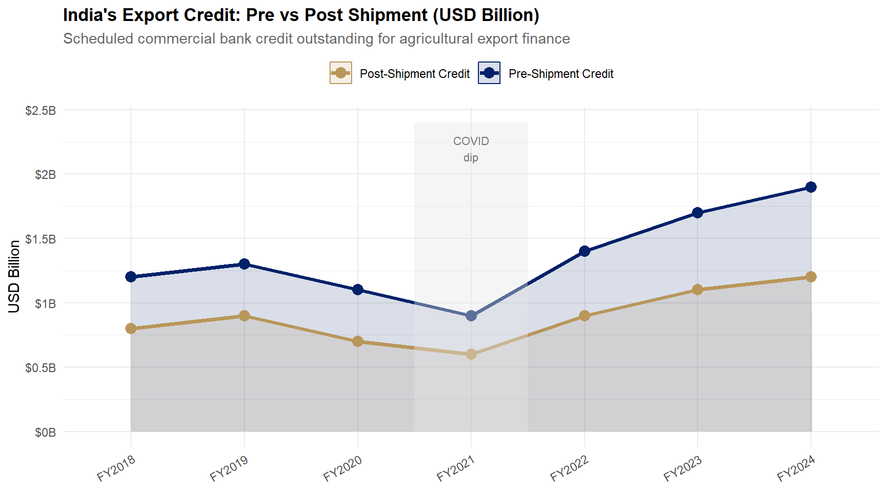

library(ggplot2)
library(dplyr)
library(tidyr)
df_credit <- data.frame(
Year = factor(
c("FY2018","FY2019","FY2020","FY2021","FY2022","FY2023","FY2024"),
levels = c("FY2018","FY2019","FY2020","FY2021","FY2022","FY2023","FY2024")),
Pre_Shipment_B = c(1.2, 1.3, 1.1, 0.9, 1.4, 1.7, 1.9),
Post_Shipment_B = c(0.8, 0.9, 0.7, 0.6, 0.9, 1.1, 1.2)
)
df_long <- df_credit |>
tidyr::pivot_longer(cols = c(Pre_Shipment_B, Post_Shipment_B),
names_to = "Type", values_to = "Value_B") |>
dplyr::mutate(Type = ifelse(Type == "Pre_Shipment_B",
"Pre-Shipment Credit", "Post-Shipment Credit"))
ggplot(df_long, aes(x = Year, y = Value_B, colour = Type, fill = Type, group = Type)) +
geom_area(alpha = 0.15, position = "identity") +
geom_line(linewidth = 1.3) +
geom_point(size = 3.5) +
annotate("rect", xmin = 3.5, xmax = 4.5, ymin = 0, ymax = 2.4, fill = "grey90", alpha = 0.4) +
annotate("text", x = 4, y = 2.2, label = "COVID\ndip", size = 2.9, colour = "grey45", hjust = 0.5) +
scale_colour_manual(values = c("Pre-Shipment Credit" = "#012169", "Post-Shipment Credit" = "#B9975B")) +
scale_fill_manual(values = c("Pre-Shipment Credit" = "#012169", "Post-Shipment Credit" = "#B9975B")) +
scale_y_continuous(limits = c(0, 2.4), labels = function(x) paste0("$", x, "B")) +
labs(title = "India's Export Credit: Pre vs Post Shipment (USD Billion)",
subtitle = "Scheduled commercial bank credit outstanding for agricultural export finance",
x = NULL, y = "USD Billion", colour = NULL, fill = NULL) +
theme_minimal(base_size = 11) +
theme(legend.position = "top", plot.title = element_text(face = "bold"),
plot.subtitle = element_text(colour = "grey40"),
axis.text.x = element_text(angle = 30, hjust = 1))